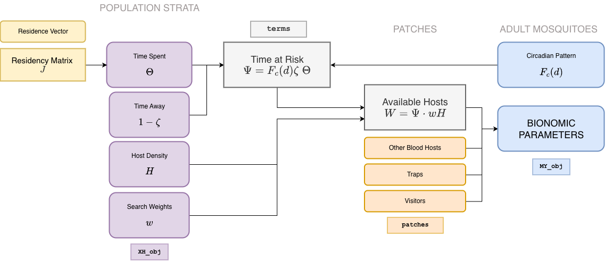

In ramp.xds, blood feeding is
understood as an interaction between mosquitoes and humans. An interface
was designed to model blood feeding in a way that was mathematically
sound. For most MY modules, the default set up option
passes the value of bionomic parameters making it possible to build
models that are not mathematically sound. Three potential issues
are:
\(f\) is positive when no blood hosts are present;
\(q \neq 0\) when no humans are present; or
\(q \neq 1\) when only humans are present
To handle these issues, and meanwhile to guarantee that blood feeding and transmission are consistent, an interface was developed to compute mosquito bionomic parameters in relation to resource availability. This was also used to develop the Transmission Interface

The human population is segmented into strata by residency: the patch
where each stratum resides is passed as a vector called
residence. Information about residency is passed in a
vector during basic setup, and nStrata = length(residence).
The residence matrix, \(J\) is used to
do sums by patch. It gets created from the residence vector, and the
number of patches:
residence = c(1,1, 2, 2)
make_residence_matrix(3, residence) -> J
J## [,1] [,2] [,3] [,4]
## [1,] 1 1 0 0
## [2,] 0 0 1 1
## [3,] 0 0 0 0The user must also pass human population density \(H.\) The total resident population of the patches
## [,1]
## [1,] 1100
## [2,] 110
## [3,] 0Available Humans
The model for blood feeding is motivated by a simple concept of availability: mosquitoes search for humans; the humans are found in places where they spend time when mosquitoes are active. Availability is based on a measure of weighted, ambient population.
Humans spend time.
-
\(\Theta\) — A matrix describes how humans spend their time. There is one column for each stratum. Each column should sum to a number that is less than or equal to one. If the column does not sum to 1, then humans are spending some time not at risk when they are not traveling.
During basic setup, the time spent is initialized to be the same as the residence matrix.
Models for time spent are set up by
setup_timespent
-
\(w\) — Each human population stratum has a search weight.
During basic setup, the search weights are set to 1 by default for all strata
The search weights can be modified using
setup_blood_search_weights
-
\(\zeta\) — Humans sometimes travel. In this model, it means they spend some time outside the spatial domain.
By default, time away for all the strata is set to 0.
Time away can be changed by
setup_time_away
Mosquitoes search for blood hosts, and there is a daily activity pattern.
-
The daily mosquito activity pattern is described by a circadian function \(F_c(d),\) a function that is constrained such that \[\int_0^1 F_c(d) dd=1\]
During setup, mosquitoes are equally active at all times of day.
An alternative circadian function can be set up using
setup_F_circadian
Using these, we can compute ambient population density: \[A = \Theta \cdot (\zeta H)\]
Availability is the ambient population density weighted by search weights: \[W = \Theta \cdot (w \zeta H)\]
Time at risk is ambient population density weighted by mosquito activity: \[\Psi = F_c(d) \zeta \Theta\]
Searching
Mosquito searching for blood hosts can often lead them to find something that isn’t a resident human:
-
Other blood hosts
The availability of other blood hosts is set to 0.
Other values can be configured using
setup_other_blood_hosts
-
Traps — some traps are designed to capture blood feeding mosquitoes
The availability of blood traps is set to 0.
Other values can be configured using
setup_other_blood_traps
-
Visitors (\(V\)) are non resident humans
The availability of visitors is set up to 0.
Other values can be configured using
setup_visitors
Total availability of all resources that would attract blood feeding mosquitoes is \[B= W + V + \ldots\]
Bionomics
Users can set up resources to motivate heterogeneous mosquito behaviors in a way that guarantees there are no mathematical inconsistencies like the ones listed at the top of this document.
The mosquito bionomic parameters describing blood feeding — blood feeding rates \(f\), the human fraction \(q\), and possibly emigration rates, \(\sigma\) — can be computed as a function of available resources. We call these functional responses.
The blood feeding rate is a function of the total available blood \[f = F_f(B, ...)\]
The human fraction is \[q = F_q(t, V(t), W(t), B(t))= \frac{V+W}{B}\]
Emigration is a result of searching for resources, including blood: \[\sigma = F_\sigma(t, B(t),...)\]